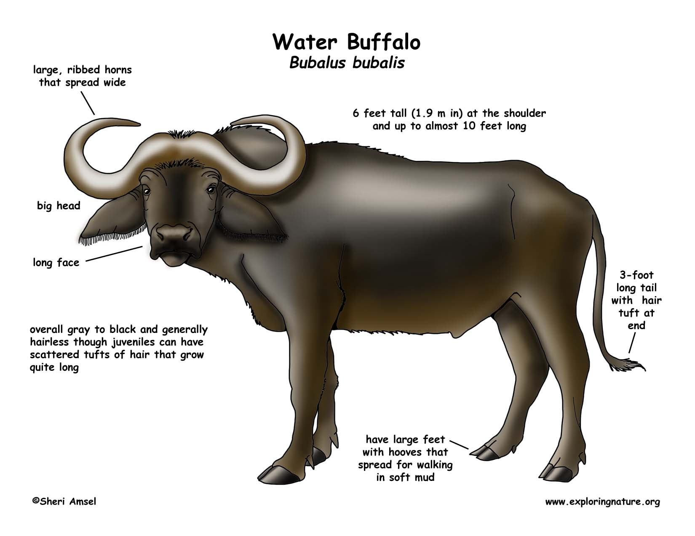

Trâu là một loài động vật thuộc họ Trâu bò (Bovidae). Chúng sống hoang dã ở Nam Á (Pakistan, Ấn Độ, Bangladesh, Nepal, Bhutan) Đông Nam Á, miền bắc Úc. Trâu thuần dưỡng, tức trâu nhà được nuôi phổ biến nhất ở vùng nhiệt đới châu Á. Một số nhỏ có mặt ở Nam Mỹ và Bắc Phi châu.
Tuy trâu rừng vẫn còn tồn tại trong thiên nhiên song số lượng trâu hoang dã không còn nhiều. Giới khoa học lo rằng trâu rừng thuần chủng không còn nữa vì đã lai với trâu nhà. Riêng tại Việt Nam số lượng trâu rừng còn rất ít, chủ yếu phân bố dọc dãy Trường Sơn, trong đó có khu vực miền tây Thanh Hóa giáp với Lào. Nhiều đàn trâu đã được thuần dưỡng và lai với trâu nhà.
Trâu trưởng thành nặng khoảng từ 200 đến 800 kg. Loài trâu rừng hoang dã lớn hơn thế rất nhiều; con cái có thể nặng 500 kg, con đực lên tới 800 kg, và cao tới khoảng 1,7 m. Trâu rừng châu Á có cặp sừng dài nhất trong số các loài thú có sừng trên thế giới. Mới đây, tại Việt Nam, một bộ sừng trâu rừng lớn chưa từng thấy đã được phát hiện, ước đoán to hơn trâu rừng hiện nay rất nhiều.
| Phân loại khoa học |  | |
|---|---|---|
| Lớp | Thú | |
| Bộ | Guốc chẵn | |
| Họ | Trâu bò | |
| Phân loài | ||
|
||